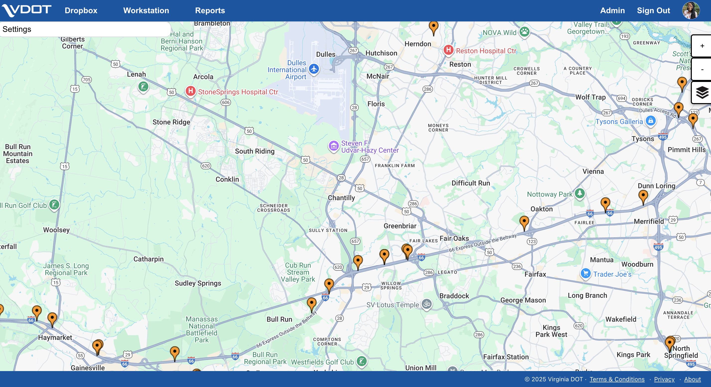
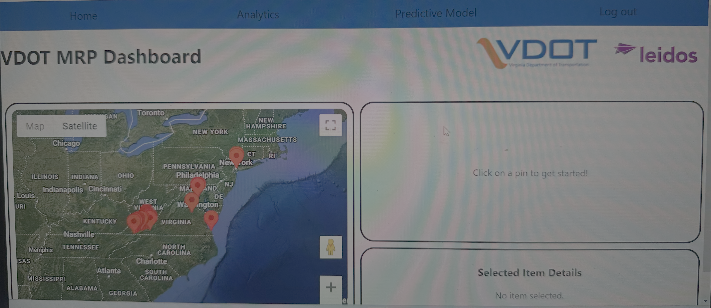
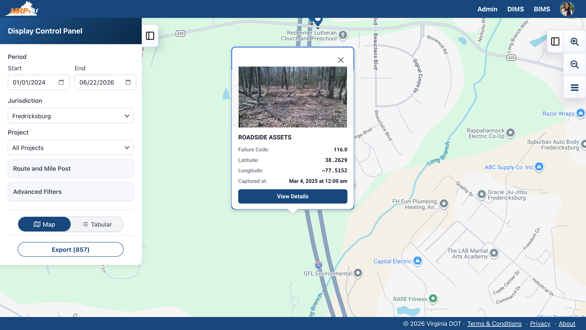
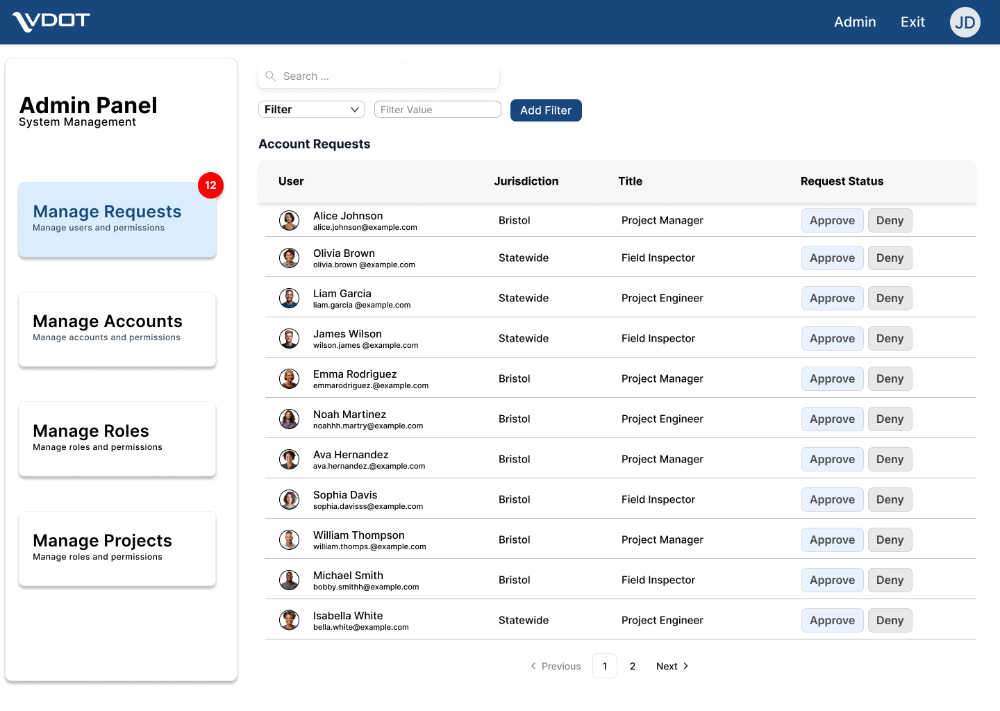
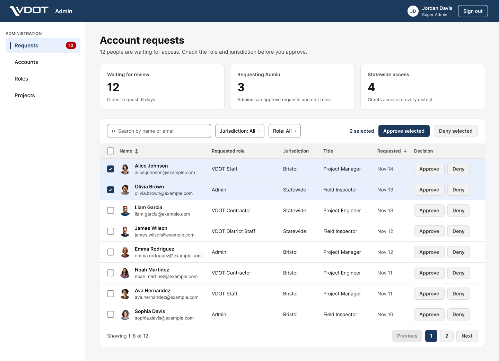
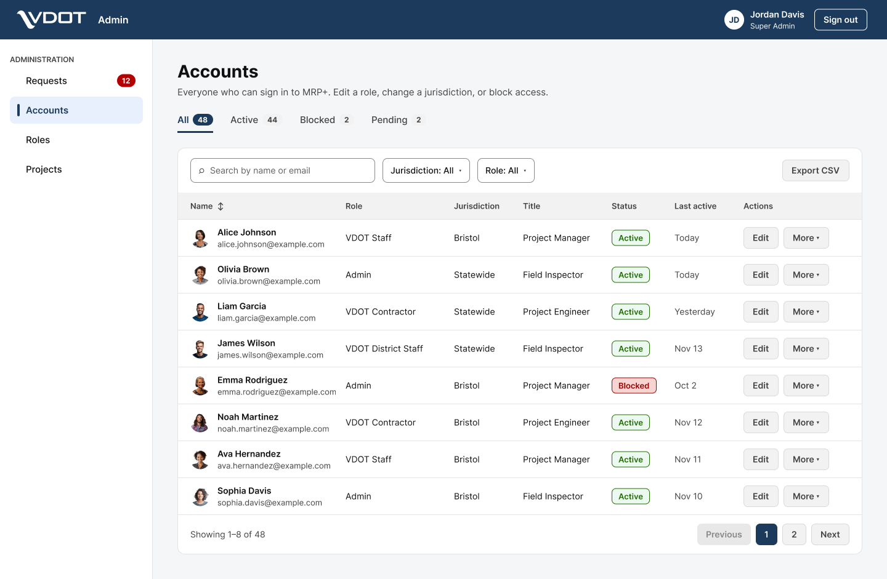

One place to see, review and act on field inspections
I designed the web counterpart to the VDOT MRP field app. It takes inspection data collected on the highway and shows it on a map and in tables, so district staff can track asset conditions, manage access across districts, and act without re-entering data by hand.

- Role
- Lead UX Designer, front-end support
- Client
- Virginia DOT
- Users
- 3 roles across districts
- Team
- PM, Solutions Architect, Software Engineer, Engineering Intern
- Status
- In production
Field data with nowhere to go
Inspectors were collecting data on the mobile app, but office staff had no central place to view, filter or act on it. The platform had to serve three roles with very different permissions, all in one interface.
As Lead UX Designer, I owned the full design of the web platform and contributed to front-end development, refining the information hierarchy through stakeholder feedback at sprint reviews.
One platform, built around how each role works
Two views of the same data
A map for geographic context, matching how inspectors already think about their walk-arounds, and a filterable table for scanning, sorting and exporting. Admins live in the table.
Match the mental modelRole-gated, not three apps
One interface with views gated by role: users see their projects, Admins their district, Super Admins everything, including user approvals.
ConsistencyA clear place to start
Occasional users didn't know where to go first. A menu anchored to the profile tab gives a quick entry point to projects and role views without cluttering the main navigation.
Reduce "where do I start?"From prototype to production
Working in the React codebase, I built the dashboard's front end from my own Figma components: the status indicators, the map detail popover, the filterable data table, the Map/Tabular toggle and the responsive Display Control Panel. I managed my revisions with Git and ramped up on React by pairing with the team's software engineer, AI-assisted development and independent learning.


Redesigning account approvals
Super Admins approve every new user, so the request queue is where access decisions happen. The admin platform hasn't launched yet, so before launch I reviewed my first version of these screens against usability heuristics and WCAG 2.1 AA and redesigned the approval flow.


Show what's being granted
A Requested role column and summary cards for the requests that carry the most access: Admin roles and statewide jurisdiction.
Recognition rather than recallFewer steps to the right request
A three-step filter builder became one bar with search plus Jurisdiction and Role filters. Bulk Approve and Deny clear a queue at once.
Flexibility and efficiencyNeutral decisions
Approve and Deny share one neutral style and size on every row, so nothing nudges an admin toward granting access.
Error preventionAccounts at a glance
Status tabs with live counts, and a labeled "More" menu instead of an unlabeled icon, with a clear name for screen readers.
Visibility of status · WCAG labels
One system, two platforms
The dashboard and the field app share one design system: Inter type, a navy and orange palette, and the same status logic. Tokens are sized per platform: 56px controls for gloved hands in the field, 35px so managers can scan dense tables at a desk. Every text color passes WCAG 2.1 AA, and status always carries a word.
Color
Navy and orange carry the brand. Every text pairing passes WCAG 2.1 AA (4.5:1), most pass 7:1, for reading in direct sun.
Headers, secondary actions, selection
White text 11.6:1
The one main action per screen
White text 5.2:1
Destructive actions, as an outline
On white 7.2:1
Body and secondary text
18.9:1 · 9.7:1
Selected cards, paired with a navy border
Text 16.5:1
Status
Each badge's text uses the same dark color as its border, so labels stay readable on the tinted fill. Status always carries a word, never color alone.
Type and sizing: one token, two platforms
Both products use Inter and share the same token names. Figma variables switch between an App mode and a Hub mode, so the field app gets larger targets and type, and the dashboard stays dense.
| Token | App (field) | Hub (web) |
|---|---|---|
| text.heading | 28 Extra Bold | 24 Semi Bold |
| text.body-lg | 18 Bold | 16 Semi Bold |
| text.body | 16 Semi Bold | 14 Regular |
| control height | 56px | 35px |
| radius sm / md / lg | 4 / 12 / 16 | 4 / 7 / 8 |
Core components
Buttons. Orange marks the one main action on a screen, navy supports it, and destructive actions are outlined in red. Keyboard focus shows a 3px blue ring.
Code: 102
Code: 102
Record card. Selection changes both fill and border, so it still reads in glare.
Paired decisions. In the dashboard, Approve and Deny share one neutral style so neither looks like the default.
Where it stands
Field to office
Inspection data flows from the mobile app into map and table views with no manual re-entry.
Built to scale
Three permission levels in one interface, ready for more districts and users.
Design and code
I supported development alongside design, closing the gap between prototype and production.
Part of a connected system. See the Field Inspection App case study for the other half.
The Alpha Team
Sole UX Designer on a 5-person team at Leidos: PM, Solutions Architect, Software Engineer, and Engineering Intern.